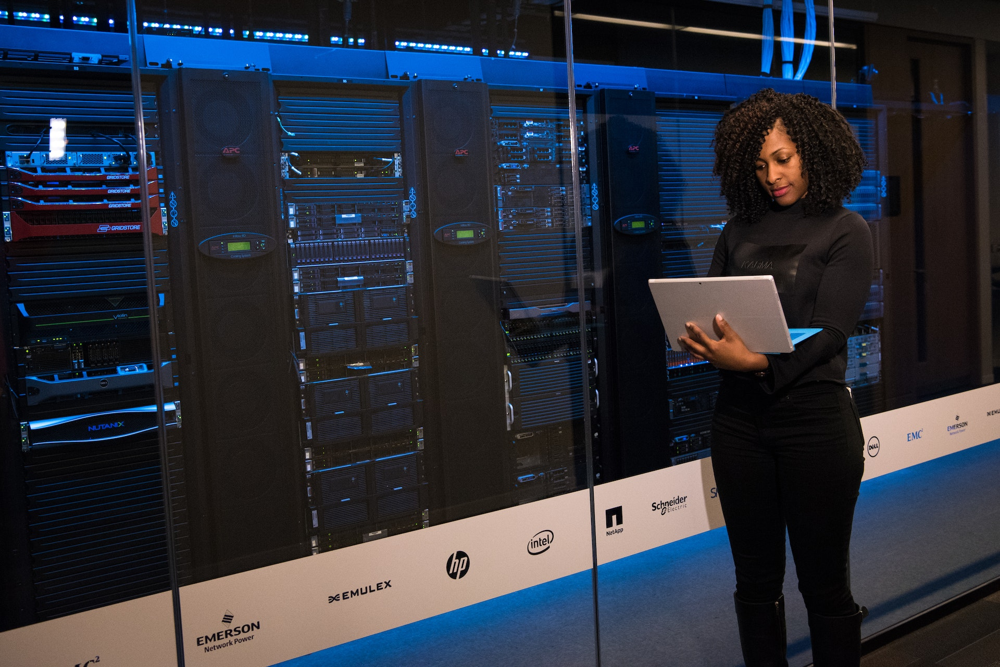

Somos una compañía con más de veintisiete años de trayectoria en Ecuador, desarrollando soluciones tecnológicas de Network, Connectivity, Cloud, Security, Collaboration, Electronic Security y Transit para el segmento corporativo, basados en una sólida plataforma e infraestructura de Fibra Óptica de un altísimo nivel de capilaridad que nos permite desarrollar negocios, junto con nuestras filiales pertenecientes a Holding Telconet, así como una presencia en otros países de Latinoamérica como Panamá, Guatemala y Colombia. Al día de hoy, nuestra vasta experiencia reafirma que la esencia de nuestro negocio está en el entendimiento profundo de las necesidades tecnológicas de las compañías, por eso estamos comprometidos íntegramente con nuestros servicios, otorgando valor a cada solución ofrecida a nuestros clientes.
Propósito de Telconet Latam En Telconet Latam, estamos siempre en la búsqueda de la Mejora Continua, la Innovación Tecnológica y sobre todo impulsando nuevas ideas para conectar con nuestra gente, nuestras comunidades y grupos de interés. Hoy queremos ser una compañía que se mueve a través de un propósito y un objetivo global, pensando en la sociedad ecuatoriana, para que con nuestra tecnología, pasión y talentos nos transformemos como un país enteramente conectado. Este propósito es lo que nos inspira como organización y lo que nos permitirá dejar una huella que trascienda las fronteras del tiempo y el espacio:

Ser la mejor alternativa e integrar al Ecuador a través de la provisión de servicios de comunicación de video, voz y datos; siguiendo estándares internacionales de calidad y usando la mejor y más moderna tecnología en telecomunicaciones.
Telconet Latam es una organización dedicada a proveer Servicios de Telecomunicaciones y Centros de Datos, apoyando decididamente acciones para garantizar la Seguridad, Salud Ocupacional y Prevención de la Contaminación Ambiental en nuestras Unidades de Negocios; abarcando a nuestro Talento Humano que es capacitado mediante la comprensión y concienciación del compromiso de nuestra organización con: Cumplir los requisitos legales aplicables a nuestra actividad. Investigación de accidentes e incidentes laborales y ambientales, con el fin de prevenirlos, reducirlos o controlarlos mediante mejora procesos. Presupuestar recursos financieros, humanos y tecnológicos que requiera el sistema para demostrar la mejora continua. Promover las buenas relaciones laborales y comunitarias. Uso racional de los recursos naturales, energéticos y otros para minimizar la huella de carbono e hídrica. Manejo adecuado de desechos comunes, especiales y peligrosos que generen nuestras actividades. Por consiguiente, la alta Dirección vela porque la Política SSA esté implementada, comunicada y revisada periódicamente; validando su disponibilidad a las partes interesadas.
TELCONET S.A. es una compañía con más de veintisiete años de trayectoria en Ecuador, que desarrolla soluciones tecnológicas de Network, Connectivity, Cloud, Security, Collaboration, Electronic Security y Transit para el segmento corporativo, basados en una sólida plataforma e infraestructura de Fibra Óptica de un altísimo nivel de capilaridad que nos permite desarrollar negocios, junto con nuestras filiales pertenecientes al Holding Telconet, así como una presencia en otros países de Latinoamérica como Panamá, Guatemala y Colombia. Al navegar en nuestro sitio web, usted nos confía sus datos personales, esto es una gran responsabilidad y nos comprometemos al máximo para proteger su información y permitirle gestionarla. Esta Política de Protección de Datos Personales tiene como objetivo informar a las personas sobre qué datos recogemos, por qué los recogemos y cómo pueden hacer ejercicio de sus derechos.
Para Sincables C.A los datos personales del cliente es una prioridad, por eso y más en nuestro sitio web ofrecemos el más alto nivel de seguridad. El cliente podrá verificar que está presente el certificado de seguridad en nuestro sitio web otorgado por SSL Global Sign.
Sincables C.A respeta la privacidad de los clientes y personas que se registren en nuestro sitio web. Toda la información que nos sea proporcionada será tratada con cuidado, manteniendo su integridad y solo será utilizada por Sincables C.A en los casos que sea necesario.
Primeros en empezar la construcción de una Red OTN de altísima tecnología que transportará Lambdas de 100G dentro de Ecuador. (2014) Primeros en desarrollar y empezar la construcción de una Fábrica de Cables de Fibra Óptica en Ecuador de altísima Tecnología (Fiberhome Latam) en asociación con el gigante Chino FiberHome. (2013) Primeros en diseminar como empresa Ecuatoriana y liderar el Proyecto de construir un nuevo Cable Submarino que conecte el Ecuador con el mundo conectando un Cable Submarino con tecnología Alcatel de multiples Lambdas de 100 Gigas que sale desde Manta Ecuador y termina en Jacksonville Estados Unidos. ( 2013)
Proveer Servicios Tecnológicos apoyados por un Sistema de Gestión de Continuidad del Negocio enfocado en la reanudación de operaciones y servicios de acuerdo a los niveles y tiempos establecidos ante la ocurrencia de un incidente perturbador. Nuestro sistema está orientado a la mejora continua.